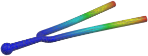
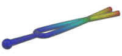

View the results
The activity only has you step through two types of results. You are encouraged to spend some time looking at more of the results that were calculated during the solution.
 Simulation Navigator
Simulation Navigator
-
.gif) Results
Results
 Post-Processing Navigator
Post-Processing Navigator
-

 Solution 1 (expand if necessary)
Solution 1 (expand if necessary)
-
The modal results are listed in the Post Processing Navigator. The first 6 modes have extremely low frequencies. These are rigid body modes. Mode 7 represents the first flexible mode with a natural frequency of about 440 Hz.
-
Mode 7 (expand)
-
Displacement – Nodal (expand)
-
 Magnitude
Magnitude -

-
Note
The mode shape that you see may be 180 degrees out of phase: 